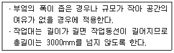
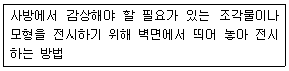
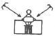
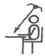
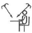
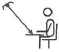
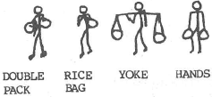

실내건축산업기사 (2017-05-07 기출문제)
1과목: 실내디자인론
1. 장식물의 선정과 배치상의 주의사항으로 옳지 않은 것은?
- 좋고 귀한 것은 돋보일 수 있도록 많이 진열한다.
- 여러 장식품들이 서로 조화를 이루도록 배치한다.
- 계절에 따른 변화를 시도할 수 있는 여지를 남긴다.
- 형태, 스타일, 색상 등이 실내공간과 어울리도록 한다.
(정답률: 86%)

2. 바닥에 관한 설명으로 옳지 않은 것은?
- 공간을 구성하는 수평적 요소이다.
- 고저차로 공간의 영역을 조정할 수 있다.
- 촉각적으로 만족할 수 있는 조건을 요구한다.
- 벽, 천장에 비해 시대와 양식에 의한 변화가 현저하다.
(정답률: 71%)
3. 다음 중 2인용 침대인 더블베드(double bed)의 크기로 가장 적당한 것은?
- 1000mm×2100mm
- 1150mm×1800mrn
- 1350mm×2000mm
- 1600mm×2400mm
(정답률: 79%)
4. 다음 중 조닝(zoning)계획 시 고려해야 할 사항과 가장 거리가 먼 것은?
- 행동반사
- 사용목적
- 사용빈도
- 지각심리
(정답률: 57%)
5. 착시 현상에 관한 설명으로 옳지 않은 것은?
- 같은 길이의 수직선이 수평선보다 길어 보인다.
- 사선이 2개 이상의 평행선으로 중단되면 서로 어긋나 보인다.
- 같은 크기의 2개의 부채꼴에서 아래쪽의 것이 위의 것보다 커 보인다.
- 달 또는 태양이 지평선에 가까이 있을 때가 중천에 떠 있을 때보다 작아 보인다.
(정답률: 60%)
6. 다음 중 상점 내에 진열케이스를 배치할 때 가장 우선적으로 고려해야 할 사항은?
- 고객의 동선
- 마감재의 종류
- 실내의 색채계획
- 진열케이스의 수량
(정답률: 83%)
7. 실내디자인의 프로세스를 조사분석 단계와 디자인 단계로 나눌 경우, 다음 중 조사분석 단계에 속하지 않는 것은?
- 종합분석
- 정보의 수집
- 문제점의 인식
- 아이디어 스케치
(정답률: 77%)
8. 다음과 같은 특정을 갖는 부엌 작업대의 배치 유형은?

- 일렬형
- 병렬형
- ㄱ자형
- ㄷ자형
(정답률: 74%)
9. 조명기구의 설치방법에 따른 분류에서 천장에 매달려 조명하는 방식으로 조명기구 자체가 빛을 발하는 액세서리 역할을 하는 것은?
- 브라켓
- 펜던트
- 스탠드
- 캐스케이드
(정답률: 80%)
10. 의자 및 소파에 관한 설명으로 옳지 않은 것은?
- 소파가 침대를 겸용할 수 있는 것을 소파베드라 한다.
- 세티는 동일한 두 개의 의자를 나란히 합해 2인이 앉을 수 있도록 한 것이다.
- 라운지 소파는 편히 누울 수 있도록 쿠션이 좋으며 머리와 어깨부분을 받칠 수 있도록 한쪽 부분이 경사져 있다.
- 체스터필드는 고대 로마시대 음식물을 먹거나 잠을 자기 위해 사용했던 긴 의자로 좌판의 한쪽 끝이 올라간 형태이다.
(정답률: 65%)
11. VMD(visual merchandising)의 구성에 속하지 않는 것은?
- VP
- PP
- IP
- POP
(정답률: 70%)
12. 사무소 건축의 엘리베이터 계획에 관한 설명으로 옳지 않은 것은?
- 출발 기준층은 2개 층 이상으로 한다.
- 승객의 층별 대기시간은 평균 운전간격 이하가 되게 한다.
- 군 관리운전의 경우 동일 군내의 서비스 층은 같게 한다.
- 초고층, 대규모 빌딩인 경우는 서비스 그룹을 분할(죠닝)하는 것을 검토한다.
(정답률: 54%)
13. 다음 중 단독주택의 현관 위치결정에 가장 주된 영향을 끼치는 것은?
- 건폐율
- 도로의 위치
- 주택의 규모
- 거실의 크기
(정답률: 82%)
14. 개방형 사무실(open office)에 관한 설명으로 옳지 않은 것은?
- 소음이 적고, 독립성이 있다.
- 전체면적을 유용하게 사용할 수 있다.
- 실의 길이나 깊이에 변화를 줄 수 있다.
- 주변공간과 관련하여 깊은 구역의 활용이 용이하다.
(정답률: 83%)
15. 다음 중 황금비례를 나타낸 것은?
- 1 : 1.414
- 1 : 1.618
- 1 : 1.681
- 1 : 1.861
(정답률: 77%)
16. 디자인 원리 중 대비에 관한 설명으로 옳지 않은 것은?
- 상반된 성격의 결합에서 이루어진다.
- 극적인 분위기를 연출하는데 효과적이다.
- 많은 대비의 사용은 화려하고 우아한 여성적인 이미지를 준다.
- 모든 시각적 요소에 대하여 상반된 성격의 결합에서 이루어진다.
(정답률: 80%)
17. 문과 창에 관한 설명으로 옳지 않은 것은?
- 문은 공간과 인접공간을 연결시켜 준다.
- 문의 위치는 가구배치와 동선에 영향을 준다.
- 이동창은 크기와 형태에 제약없이 자유로이 디자인할 수 있다.
- 창은 시야, 조망을 위해서는 크게 하는 것이 좋으나 보온과 개폐의 문제를 고려하여야 한다.
(정답률: 79%)
18. 다음 설명에 알맞은 전시공간의 특수전시방법은?

- 디오라마 전시
- 파노라마 전시
- 아일랜드 전시
- 하모니카 전시
(정답률: 69%)
19. 베네시안 블라인드에 관한 설명으로 옳지 않은 것은?
- 수평형 블라인드이다.
- 날개 사이에 먼지가 쌓이기 쉽다는 단점이 있다.
- 쉐이드라고도 하며 단순하고 깔끔한 느낌을 준다.
- 날개의 각도를 조절하여 일광, 조망 및 시각의 차단정도를 조정하는 장치이다.
(정답률: 72%)
20. 다음 중 엄숙, 의지, 신앙, 상승 등을 연상하게 하는 선은?
- 수직선
- 수평선
- 사선
- 곡선
(정답률: 78%)
2과목: 색채 및 인간공학
21. 소음이 전달되지 못하도록 하기 위해서는 그 음원을 음폐하고, 그 한계 내에 있는 벽을 어떤 구조로 하는 것이 가장 바람직한가?
- 공명
- 분산
- 이동
- 흡음
(정답률: 78%)
22. 가까운 물체의 상이 망막 뒤에서 맺히는 상태를 무엇이라 하는가?
- 근시
- 난시
- 원시
- 정상시
(정답률: 47%)
23. 인간 - 기계 시스템의 기본기능이 아닌 것은?
- 행동기능
- 감지(sensing)
- 가치기준 유지
- 정보처리 및 의사결정
(정답률: 66%)
24. 인체의 구조를 체계적으로 나열한 것으로 맞는 것은?
- 세포(Cells) → 기관(Organs) → 조직(Tissues) → 계(System)
- 세포(Cells) → 조직(Tissues) → 기관(Organs) → 계(System)
- 세포(Cells) → 조직(Tissues) → 계(System) → 기관(Organs)
- 세포(Cells) → 계(System) → 기관(Organs) → 조직(Tissues)
(정답률: 69%)
25. 귀의 구조에 있어 내부에는 임파액(림프액)으로 차 있으며, 이 자극을 팽창시켜 청신경으로 보내는 기관은?
- 난원창
- 중이골
- 정원창
- 달팽이관
(정답률: 67%)
26. 정수기에서 청색은 냉수, 적색은 온수를 나타내는 것은 양립성(compatibility)의 종류 중 무엇에 해당 하는 가?
- 운동 양립성
- 개념적 양립성
- 공간적 양립성
- 묘사적 양립성
(정답률: 62%)
27. 수공구 설계의 기본 원리로 볼 수 없는 것은?
- 손잡이의 단면은 원형을 피할 것
- 손잡이의 재질은 미끄럽지 않을 것
- 양손잡이를 모두 고려한 설계일 것
- 공구의 무게를 줄이고 무게의 균형이 유지될 것
(정답률: 70%)
28. 시스템의 설계 과정에서 가장 먼저 수행되어야 할 단계는?
- 기본 설계 단계
- 시험 및 평가 단계
- 시스템의 정의 단계
- 목표 및 성능 명세 결정 단계
(정답률: 64%)
29. 조명의 위치로 가장 적절한 것은?




(정답률: 58%)
30. 다음 그림 중 같은 무게의 짐을 운반할 때 가장 에너지가 적게 소모되는 방법은?

- DOUBLE PACK
- RICE BAG
- YOKE
- HANDS
(정답률: 51%)
31. 식물의 이름에서 유래된 관용색명은?
- 피콕블루(peacock blue)
- 세피아(sepia)
- 에메랄드 그린(emerald green)
- 올리브(olive)
(정답률: 77%)
32. '가을의 붉은 단풍잎, 붉은 저녁놀, 겨울 풍경색 등과 같이 친숙한 것들을 아름답게 생각하는 것'을 저드의 색채 조화이론으로 설명한다면 어느 원리인가?
- 질서의 원리
- 비모호성의 원리
- 친근감의 원리
- 동류성의 원리
(정답률: 75%)
33. 밝은 곳에서 어두운 곳으로 이동하면 주위의 물체가 잘 보이지 않다가 어두움 속에서 시간이 지나면 식별할수 있는 현상과 관련 있는 인체의 반응은?
- 항상성
- 색순응
- 암순응
- 고유성
(정답률: 78%)
34. 희망, 명랑함, 유쾌함과 같이 색에서 느껴지는 심리적 정서적 반응은?
- 구체적 연상
- 추상적 연상
- 의미적 연상
- 감성적 연상
(정답률: 55%)
35. 다음 중 가장 짠맛을 느끼게 하는 색은?
- 회색
- 올리브그린
- 빨강색
- 갈색
(정답률: 60%)
36. 기본색명(basic color names)에 대한 설명 중 틀린것은?
- 기본적인 색의 구별을 나타내기 위한 전문 용어이다.
- 국가와 문화에 따라 약간씩 차이가 있다.
- 한국산업표준(KS) A0011에서는 무채색 기본색명으로 하양, 회색, 검정의 3개를 규정하고 있다.
- 기본색명에는 스칼렛, 보랏빛 빨강, 금색 등이 있다.
(정답률: 70%)
37. 방화, 금지, 정지, 고도위험 등의 의미를 전달하기위해 주로 사용되는 색은?
- 노랑
- 녹색
- 파랑
- 빨강
(정답률: 78%)
38. 디지털 이미지에서 색채 단위 수가 몇 이상이면 풀컬러(Full Color)를 구현한다고 할 수 있는가?
- 4비트 컬러
- 8비트 컬러
- 16비트 컬러
- 24비트 컬러
(정답률: 65%)
39. “M = O/C”는 문ㆍ스펜서의 미도를 나타내는 공식이다. “0”는 무엇을 나타내는가?
- 환경의 요소
- 복잡성의 요소
- 구성의 요소
- 질서성의 요소
(정답률: 48%)
40. 만화영화는 시간의 차이를 두고 여러 가지 그림이 전개되면서 사람들이 색채를 인식하게 되는데, 이와 같은 원리로 나타나는 혼색은?
- 팽이를 돌렸을 때 나타나는 혼색
- 컬러슬라이드 필름의 혼색
- 물감을 섞었을 때 나타나는 혼색
- 6가지 빛의 원색이 혼합되어 흰빛으로 보여 지는 혼색
(정답률: 60%)
3과목: 건축재료
41. 가공이 용이하고 내식성이 커 논슬립, 난간, 코너비드 등의 부속철물로 이용되는 금속은?
- 니켈
- 아연
- 황동
- 주석
(정답률: 50%)
42. 보통 판유리의 연화온도의 범위로 가장 적당한 것은?
- 1400~1500℃
- 1000~1200℃
- 700~750℃
- 500~550℃
(정답률: 45%)
43. 급경성으로 내알칼리성 등의 내화학성이나 접착력이 크고 내수성이 우수하며 금속, 석재, 도자기, 유리, 콘크리트, 플라스틱재 등의 접착에 모두 사용되는 접착제는?
- 페놀수지 접착제
- 요소수지 접착제
- 멜라민수지 접착제
- 에폭시수지 접착제
(정답률: 65%)
44. KS L 4201에 따른 점토벽돌의 치수로 옳은 것은? (단, 단위는 mm)
- 190×90×57
- 190×90×60
- 210×90×57
- 210×90×60
(정답률: 72%)
45. 수지를 지방유와 가열융합하고, 건조제를 첨가한 다음 용제를 사용하여 희석하여 만든 도료는?
- 래커
- 유성바니시
- 유성페인트
- 내열도료
(정답률: 56%)
46. 열린 여닫이문이 저절로 닫히게 하는 철물로서 여닫이 문의 윗막이대와 문틀 상부에 설치하는 창호철물은?
- 크레센트
- 도어클로저
- 도어스톱
- 도어홀더
(정답률: 71%)
47. 내충격성, 내열성, 내후성, 투명성 등의 특징이 있고, 유연성 및 가공성이 우수하며 강화유리의 150배 이상의 충격도를 가진 재료는?
- 아크릴 시트
- 고무타일
- 폴리카보네이트
- 블라인드
(정답률: 52%)
48. 단열재의 선정조건으로 옳지 않은 것은?
- 흡수율이 낮을 것
- 비중이 클 것
- 열전도율이 낮을 것
- 내화성이 좋을 것
(정답률: 70%)
49. 상온에서 건조되지 않기 때문에 도포 후 도막형성을 위해 가열공정을 거치는 도장재료는?
- 소부 도료
- 에나멜 페인트
- 아연 분말 도료
- 락카샌딩실러
(정답률: 34%)
50. 모르타르 배합수 중의 미응결수나 빗물 등에 의해 시멘트 중의 가용성 성분이 용해되어 그 용액이 조적조표면에 백색 물질로 석출되는 현상은?
- 백화현상
- 침하현상
- 크리프변형
- 체적변형
(정답률: 76%)
51. 석회암이 변화되어 결정화한 것으로 실내장식재, 조각재로 사용되는 것은?
- 화강암
- 대리석
- 응회암
- 안산암
(정답률: 68%)
52. 다음 중 도막 방수재를 사용한 방수공사 시공순서에 있어 가장 먼저 해야 할 공정은?
- 바탕정리
- 프라이머 도포
- 담수시험
- 보호재 시공
(정답률: 61%)
53. 각종 단열재에 관한 설명으로 옳지 않은 것은?
- 암면은 암석으로부터 인공적으로 만들어진 내열성이 높은 광물섬유를 이용하여 만드는 제품으로 단열성, 흡음성이 뛰어나다.
- 세라믹 파이버의 원료는 실리카와 알루미나이며, 알루미나의 함유량을 늘리면 내열성이 상승한다.
- 경질 우레탄폼은 방수성, 내투습성이 뛰어나기 때문에 방습층을 겸한 단열재로 사용된다.
- 펄라이트 판은 천연의 목질섬유를 원료로 하며, 단열성이 우수하여 주로 건축물의 외벽 단열재 바름에 사용된다.
(정답률: 55%)
54. 보통유리에 관한 설명으로 옳지 않은 것은?
- 건조상태에서 전도체이다.
- 급히 가열하거나 냉각시키면 파괴되기 쉽다.
- 불연재료이지만 방화용으로서는 적당하지 않다.
- 창유리의 강도는 보통 휨강도를 말한다.
(정답률: 52%)
55. 다음 시멘트 중 조기강도가 가장 큰 것은?
- 중용열포틀랜드시멘트
- 고로시멘트
- 알루미나시멘트
- 실리카시멘트
(정답률: 43%)
56. 다음 도료 중 내마모성, 내수성, 내후성이 우수하나 도막이 얇고 부착력이 약한 도료는?
- 수성 페인트
- 유성 페인트
- 유성 바니쉬
- 래커
(정답률: 49%)
57. 1종 점토벽돌의 압축강도는 최소 얼마 이상이어야 하는가?
- 10.78N/mm2
- 18.6N/mm2
- 20.59N/mm2
- 24.5N/mm2
(정답률: 59%)
58. 목재의 유용성 방부제로 사용되는 것은?
- 크레오소트유
- 콜타르
- 불화소다 2%용액
- P.C.P
(정답률: 43%)
59. 목재를 소편(小片, chip)으로 만들어 유기질의 접착제를 첨가하여 가열ㆍ압착 성형한 판재 제품은?
- 섬유판
- 파티클보드
- 목모보드
- 코펜하겐리브
(정답률: 72%)
60. 중용열포틀랜드시멘트에 관한 설명으로 옳지 않은 것은?
- 수화열량이 적어 한중공사에 적합하다.
- 단기강도는 조강포틀랜드시멘트보다 작다.
- 내구성이 크며 장기강도가 크다.
- 방사선 차단용 콘크리트에 적합하다.
(정답률: 35%)
4과목: 건축일반
61. 비상용승강기를 설치하지 아니할 수 있는 건축물의 기준으로 옳지 않은 것은?
- 높이 31m를 넘는 각층을 거실외의 용도로 쓰는 건축물
- 높이 31m를 넘는 각층의 바닥면적의 합계가 500m2 이하인 건축물
- 높이 31m를 넘는 층수가 4개층 이하로서 당해 각층의 바닥면적의 합계 300m2 이내마다 방화구획으로 구획한 건축물
- 높이 31m를 넘는 층수가 4개층 이하로서 당해 각층의 바닥면적의 합계 500m2(벽 및 반자가 실내에 접하는 부분의 마감을 불연재료로 한 경우) 이내마다 방화구획으로 구획한 건축물
(정답률: 41%)
62. 주요구조부를 내화구조로 하여야 하는 건축물에 해당되지 않는 것은?
- 당해 용도의 바닥면적 합계가 500m2인 판매시설
- 당해 용도의 바닥면적 합계가 600m2인 문화 및 집회시설 중 전시장
- 당해 용도의 바닥면적 합계가 2000m2인 공장
- 당해 용도의 바닥면적 합계가 300m2인 창고시설
(정답률: 61%)
63. 결로의 발생원인과 가장 거리가 먼 것은?
- 실내 습기의 과다발생
- 잦은 환기
- 시공불량
- 시공직후 콘크리트, 모르타르 등의 미건조 상태
(정답률: 79%)
64. 조명설계의 순서 중 가장 우선인 것은?
- 조명기구의 배치
- 조명방식의 결정
- 광원의 선택
- 소요조도의 결정
(정답률: 54%)
65. 로마네스크 건축의 실내디자인에 관한 설명으로 옳지 않은 것은?
- 주택에서 홀(hall)공간을 매우 중요시 하였다.
- X자형 스툴이 일반적으로 사용되었다.
- 가구류는 신분을 나타내기도 하였다.
- 반원아치형 볼트가 많이 사용되었으나 창에는 사용되지 않았다.
(정답률: 64%)
66. 학교의 바깥쪽에 이르는 출입구에 계단을 대체하여 경사로를 설치하고자 한다. 필요한 경사로의 최소 수평길이는? (단, 경사로는 직선으로 되어 있으며 1층의 바닥높이는 지상보다 50cm 높다.)
- 2m
- 3m
- 4m
- 5m
(정답률: 50%)
67. 건축물의 건축주가 해당 건축물의 설계자로부터 구조 안전의 확인 서류를 받아 착공신고를 하는 때에 그 확인 서류를 허가권자에게 제출하여야 하는 대상의 기준으로 옳지 않은 것은?
- 층수가 2층(주요구조부인 기둥과 보를 설치하는 건축물로서 그 기둥과 보가 목재인 목구조 건축물의 경우에는 3층) 이상인 건축물
- 높이가 13m 이상인 건축물
- 처마높이가 9m 이상인 건축물
- 기둥과 기둥 사이의 거리가 9m 이상인 건축물
(정답률: 53%)
68. 소방시설법령에 따른 방염대상물품의 방염성능기준으로 옳지 않은 것은?
- 불꽃에 의하여 완전히 녹을 때까지 불꽃의 접촉 횟수는 5회 이상일 것
- 탄화(炭化)한 면적은 50cm2 이내, 탄화한 길이는 20cm 이내일 것
- 버너의 불꽃을 제거한 때부터 불꽃을 올리지 아니하고 연소하는 상태가 그칠 때까지 시간은 30초 이내일 것
- 국민안전처장관이 정하여 고시한 방법으로 발연량(發煙量)을 측정하는 경우 최대연기밀도는 400 이하일 것
(정답률: 51%)
69. 숙박시설의 객실 간 경계벽이 소리를 차단하는데 장애가 되는 부분이 없도록 하기 위해 갖춰야 할 구조기준에 미달된 것은?
- 철근콘크리트조로서 두께가 15cm인 것
- 철골철근콘크리트조로서 두께가 15cm인 것
- 콘크리트블록조로서 두께가 15cm인 것
- 무근콘크리트조로서 두께가 15cm인 것
(정답률: 53%)
70. 철골보에서 스티프너를 사용하는 주목적은?
- 보 전체의 비틀림 방지
- 웨브 플레이트의 좌굴 방지
- 플랜지 앵글의 단면 보강
- 용접작업의 편의성 향상
(정답률: 71%)
71. 건축허가 등을 할 때 미리 소방본부장 또는 소방서장의 동의를 받아야 하는 건축물 등의 범위에 대한 기준으로 옳지 않은 것은?
- 연면적이 100m2 이상인 노유자 시설
- 차고ㆍ주차장으로 사용되는 바닥면적이 200m2 이상인 층이 있는 주차시설
- 승강기 등 기계장치에 의한 주차시설로서 자동차 20대 이상을 주차할 수 있는 시설
- 지하층 또는 무창층이 있는 건축물로서 바닥면적이 150m2 이상인 층이 있는 것
(정답률: 50%)
72. 르꼬르뷔제(Le Corbusier)가 제시한 근대건축의 5원칙에 속하지 않는 것은?
- 유기적 공간
- 필로티
- 옥상정원
- 자유로운 평면
(정답률: 58%)
73. 소방시설 중 소화설비가 아닌 것은?
- 자동화재탐지설비
- 스프링클러설비
- 옥외소화전설비
- 소화기구
(정답률: 71%)
74. 벽돌벽을 여러 모양으로 구멍을 내어 장식적으로 쌓는 방법은?
- 공간쌓기
- 엇모쌓기
- 무늬쌓기
- 영롱쌓기
(정답률: 67%)
75. 무창층이 되기 위한 기준은 피난 소화 활동상 유효한 개구부 면적의 합계가 해당 층 바닥면적의 얼마 이하일 때인가?
- 1/10
- 1/20
- 1/30
- 1/50
(정답률: 63%)
76. 비상콘센트설비를 설치하여야 하는 특정소방 대상물의 기준에 해당되지 않는 것은?
- 가스시설 중 지상에 노출된 탱크의 용량이 30톤 이상인 탱크시설
- 층수가 11층 이상인 특정소방대상물의 경우에는 11층 이상의 층
- 지하층의 층수가 3층 이상이고 지하층의 바닥면적의 합계가 1천m2 이상인 것은 지하층의 모든 층
- 지하가 중 터널로서 길이가 500m 이상인 것
(정답률: 39%)
77. 방염성능기준 이상의 실내장식물 등을 설치하여야 하는 특정소방대상물에 해당되지 않는 것은?
- 층수가 11층 이상인 아파트
- 교육연구시설 중 합숙소
- 숙박이 가능한 수련시설
- 방송통신시설 중 방송국
(정답률: 67%)
78. 건축물 증축 시 건축허가 권한이 있는 행정기관이 건축허가 등을 할 때 미리 동의를 받아야 하는 대상으로 옳은 것은?
- 국무총리
- 소방안전관리자
- 국민안전처장관
- 소방본부장이나 소방서장
(정답률: 68%)
79. 철근콘크리트구조에서 압축부재가 원형 띠철근으로 둘러싸인 경우 축방향 주철근의 최소 개수는 얼마인가?
- 3개
- 4개
- 5개
- 6개
(정답률: 57%)
80. 연결송수관설비를 설치하여야 하는 특정소방 대상물의 기준 내용으로 옳지 않은 것은? (단, 가스시설 또는 지하구는 제외)
- 층수가 5층 이상으로서 연면적 6000m2 이상인 것
- 지하층을 포함하는 층수가 7층 이상인 것
- 지하층의 층수가 3층 이상이고 지하층의 바닥면적의 합계가 1000m2 이상인 것
- 지하가 중 터널로서 길이가 500m 이상인 것
(정답률: 49%)
이유는 너무 많은 장식물을 진열하면 공간이 혼잡해 보이고, 장식물들이 서로 겹쳐 보이거나 무너질 위험이 있기 때문입니다. 적절한 수의 장식물을 선택하고 배치하는 것이 중요합니다.